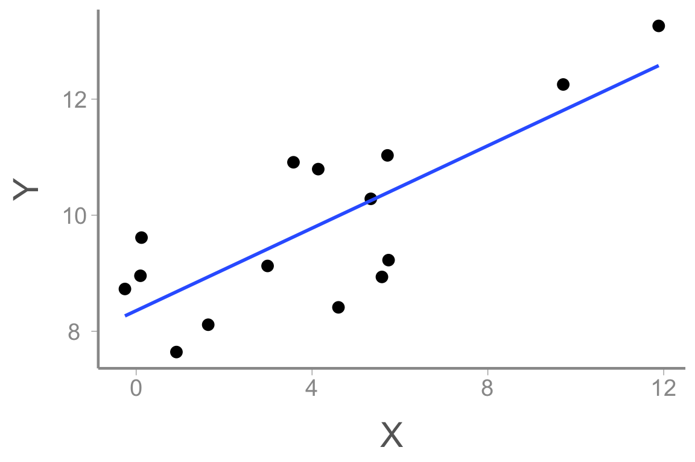
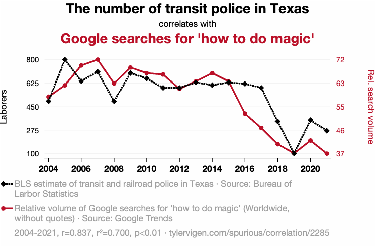
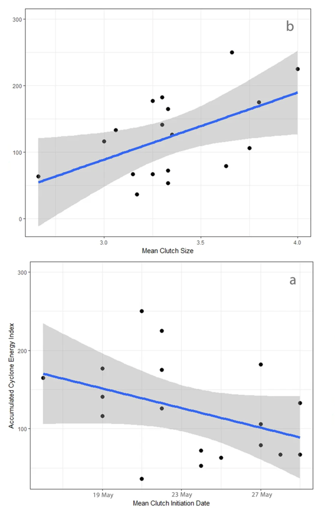
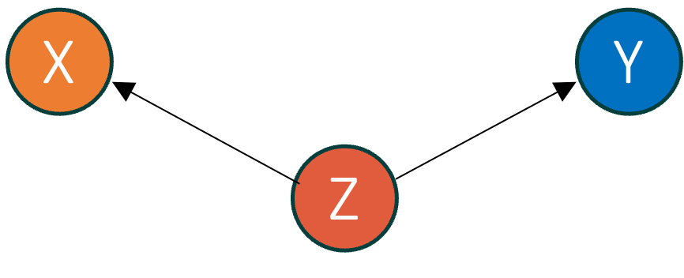

FANR 6750
Fall 2026
Statistical models measure the strength of associations between variables


Is there a statistical association between transit police and google searches? Do transit police cause google searches to increase?

Is there a statistical association between hurricanes and nest success? Does nest success cause hurricane activity?
You have all probably heard the phrase “correlation is not causation”
That is true, but…
The goal of scientific research is (often) to establish cause and effect1
If our goal is to establish cause and effect, we should not settle for measuring correlations
So what is correlation? And how do we establish causal relationships?
In the motivating examples, it was clear there was no causal effect of \(X\) on \(Y\). But there were strong statistical associations
What causes statistical associations?

Correlation = Causation + Confounding + Noise
Many definitions to choose from:
General: “A variable X is a cause of variable \(Y\) if \(Y\) in any way relies on X for its value” – Pearl et al. 2021
Interventionalist: “If we were to intervene to change the value of \(X\), and \(Y\) changes as a result, then \(X\) causes \(Y\)” (Huntington-Klein 2025)
Most definitions rely on the idea of potential outcomes
For a treatment that can take one of two levels (\(X = 0\) or \(X = 1\)), potential outcomes tell us what would happen to Y under each treatment
The causal effect of \(X\) is \(Y(X = 1) - Y(X = 0)\)
Unfortunately, we only get to see one outcome in our data
If \(X = 1\), we only see \(Y(X = 1)\) (the factual outcome)
We don’t get to see \(Y(X = 0)\) (the counterfactual outcome)
The fundamental challenge of causal inference is that we can only observe the factual outcomes
At best, and only under specific conditions, we can estimate the population-level causal effect \(Y(X = 1) - Y(X = 0)\) by averaging the observed responses of groups that receive each treatment2
This framework treats the factual outcome of each group as an estimate of the counterfactual outcome of the other group
What are the conditions (aka assumptions3) that allow estimation of causal effects?
Exchangeability: Each treatment group has the same potential outcomes
Positivity: Every experimental unit has a non-zero probability of receiving each level of treatment
Consistency: The observed response to a given treatment equals the potential outcome for that treatment
Assumption: Each treatment group has the same potential outcomes
Often, experimental units (e.g., individuals, plots, etc.) will differ in variables other than \(X\) and these variables will have some influence on \(Y\)
If treatments groups differ systematically in \(Z\), differences in \(Y\) cannot be attributed to differences \(X\)
For example, if experimental units with \(X = 0\) also tend to have smaller values of \(Z\), they will also tend to have smaller values of \(Y\)
In this case, differences \(X\) are confounded by differences in \(Z\) and thus Y(X = 1) – Y(X = 0) is not the causal effect of X
Exchangeability is met when \(X\) is not confounded by other variables \(Z\)4
Researchers are studying whether wild fires aide the recovery of an endangered plant species. They identify locations where the species has been documented and conduct systematic counts to record the current abundance at each site. Using fire records, they find that current abundance is higher in sites with recent burns (< 3 years) than sites with no recent burns (4+ years). Does fire cause higher abundance?
Researchers are studying the evolution of cooperative breeding in birds. They find that adults with more helpers tend to have higher reproductive success than adults without helpers. Does having more helpers increase reproductive success?
A common question in life history studies is whether there is a trade off (i.e., negative relationship) between reproduction and survival. Researchers monitor the annual reproductive effort and subsequent survival of wild coyotes and find that, in contrast to their predictions, individuals that raised more offspring had higher survival than individuals that raised fewer offspring. Does higher reproductive effort cause higher survival?
Assumption: Every experimental unit has a non-zero probability of receiving each level of treatment
Essentially, we need to be able to observe responses to each treatment (or treatment combinations)
If some treatments or treatment combinations are not observed, we cannot calculate counterfactual outcomes
Positivity is generally violated for two reasons:
Structural: Some experimental units cannot receive certain treatments
Stochastic: Some treatments or treatment combinations will not be observed due to chance5
Researchers from the previous example decide to do an experiment to test how the endangered plant responds to fire. They identify study sites that are potentially suitable for the focal species and randomly assign each site as either fire treatments or controls (no fire). Some landowners, however, will not allow prescribed fire on their property
In additional experiments, the researchers test whether drought conditions influence the response of the plant to prescribed fire. Additionally, the researchers suspect that 3 genetically- and geographically-distinct populations might respond differently to drought given historic differences in rainfall. Their experiment requires 18 treatments (3 varieties x 2 fire treatments x 3 watering treatments). Due to small population sizes, each treatment only has a few individuals plants and unfortunately, all plants from several treatments die before the experiment is completed.
Assumption: The observed response to a given treatment equals the potential outcome for that treatment6
In other words, the potential outcome of a given treatment \(X\) is equal to the response \(Y\) we actually observe when an experimental unit receives that treatment value
Why might a measured response differ from the potential outcome?
Poorly defined exposures (i.e., multiple treatment versions)
Interference (i.e., non-independence between response of one subject and another subject’s treatment)
Non-compliance
Researchers interested in the role of supplemental feeding on songbird behavior. They select 20 locations and randomly assign half to receive bird feeders and half as controls
At some treatment sites, spilled seed attracts mice, which in turn attracts cats. The presence of cats around the feeders causes birds to avoid the feeders (multiple treatment versions)
Some sites are too close together and birds from the control sites travel to visit feeders at the treatment sites (interference)
At some sites, the feeders are not refilled often enough, leaving long periods without supplemental food (non-compliance)
Correlation = Causation + Confounding + Noise
Statistical models measure associations – they cannot tell us whether an association is causal
Inferring causation requires meeting the assumptions of exchangeability, positivity, and consistency
Unfortunately, there are no statistical tests that can tell us whether these assumptions are met7
To infer causation, we must rely on facts and theories that exist outside of statistical models
In other words, causal inference relies on science
As scientists, our objective is (often) to document and quantify causal relationships
Causal inference requires careful consideration of the relationships among variables that influence both the cause and the effect we want to measure:
Because causal assumptions cannot be tested statistically, it is the responsibility of the researcher to argue that they have been met.
Use theory, domain expertise, previous research to identify and articulate confounders
Be transparent about the process and results
Conduct sensitivity analyses to quantify how robust conclusions are to potential assumption violations
More than anything, think deeply about your system and be transparent about your assumptions
Next time: Principles of Experimental Design
Reading: Quinn chp. 7.1-7.2
Later in the semester we will discuss some other legitimate goals of scientific research and statistical analysis
Throughout this lecture, we will assume a simple scenario of two groups that receive one of two treatments (e.g., X = 0 or X = 1). However, the concepts apply to more complex cases with many treatment levels or continuous variables. Also, although we will use the term “treatment” to refer to the variable X, the concepts apply to observational studies where the variable X is not determined by the researcher
These assumptions are separate from, and additional to, any statistical assumptions of the models used to analyze the data
Note that this does not mean experimental units don’t vary with regard to \(Z\), just that treatment groups have the same value of \(Z\) on average
particularly likely as sample sizes decrease and/or the number of treatment combinations increases
Sometimes referred to as the stable-unit-treatment-value assumption or SUTVA
This is different from the assumptions of specific models, which can often be tested
This is the topic of the next lecture
This will be the the topic of lecture ?